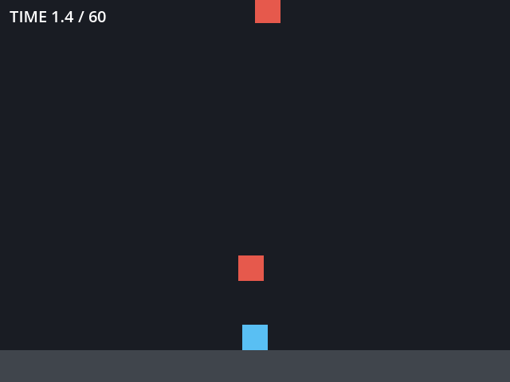

4 章 制作
この章では、ゲームがどのように作られるかを概観する。制作の流れと体制を見たあと、デジタルゲームのプログラムの骨格であるゲームループを Python で確かめ、8 章で使う Godot のサンプルを動かす。最後に、アナログゲームの制作にも触れる。
制作の流れ
規模にかかわらず、ゲームの制作はおおむね次の流れで進む。
![digraph production {
rankdir=LR;
node [shape=box, style="rounded,filled", fillcolor="#e8f0f8", color="#1f5f99"];
edge [color="#555555"];
plan [label="企画"];
proto [label="プロトタイプ"];
prod [label="量産"];
test [label="テスト"];
release [label="リリース"];
live [label="運用"];
plan -> proto -> prod -> test -> release -> live;
proto -> plan [label="面白くなければ\n企画に戻る", style=dashed, fontsize=10];
test -> prod [label="不具合の修正", style=dashed, fontsize=10];
}](../_images/graphviz-8acb0c6114d537f41dcba8cb30879f9d37617a08.png)
図 2 ゲーム制作の流れ
段階 |
内容 |
|---|---|
企画 |
どのような体験を届けるか、誰に向けるか、どの程度の規模で作るかを決める |
ゲームの核となる部分だけを素早く作り、本当に面白いかを確かめる。面白くなければ企画に戻る |
|
量産 |
ステージ、キャラクター、音楽などの素材を大量に作り、ゲームの全体を組み上げる |
テスト |
不具合を探すだけでなく、難易度や分かりやすさを、実際に遊んでもらって確かめる |
リリース |
販売や配信を始める |
運用 |
オンラインのゲームでは、リリース後も内容の追加や調整を続ける |
ゲーム制作で特に重視されるのはプロトタイプの段階である。ゲームの面白さは、仕様書を読んでも分からず、実際に遊んでみるまで判断できない。そのため、面白さを確かめる前に量産に入ると、作り直しの費用が大きくなる。
規模と体制
規模 |
人数の目安 |
特徴 |
|---|---|---|
個人 |
1 人 |
企画からプログラム、絵、音までを 1 人で担う。小さく作って早く公開することが多い |
インディー |
数人〜数十人 |
大きな会社に属さず、独自の発想で作る。デジタル配信で直接販売する |
大規模 |
数百人以上 |
開発期間は数年に及ぶ。職種が細かく分かれ、外部の会社と分担することも多い |
大規模な制作で関わる主な職種を次に示す。
職種 |
役割 |
|---|---|
プロデューサー |
予算、日程、人員を管理し、制作全体に責任を持つ |
ディレクター |
ゲームの内容の方向性を決め、品質に責任を持つ |
ゲームデザイナー（プランナー） |
ルール、ステージ、数値のバランスなどを設計する |
プログラマー |
ゲームの処理、ツール、ネットワークなどを実装する |
アーティスト |
キャラクター、背景、エフェクト、ユーザーインターフェースの絵を作る |
サウンド |
音楽と効果音を作る |
QA（品質保証） |
不具合を探し、報告する |
ゲームプログラムの骨格
ほとんどのデジタルゲームのプログラムは、次の 3 つの処理を繰り返すゲームループを骨格に持つ。
入力：キーボード、マウス、コントローラーなどからプレイヤーの操作を読む。
更新：操作とルールに従って、ゲームの状態（位置、得点、残り時間など）を 1 段階進める。
描画：状態を画面に表示する。
次の game_loop.py は、落ちてくる果物をかごで受け止める、端末上で動く最小のゲームである。read_input、update、draw の 3 つの関数が、上の 3 つの処理に対応する。ゲームの状態は State クラスにまとめている。
1"""ゲームループの最小の例（4 章）。
2
3落ちてくる果物をかごで受け止める端末上のゲーム。
41 回のループで「入力 → 更新 → 描画」を順に行う。
5入力を待つ手番制のループなので、1 回の入力が 1 フレームに当たる。
6
7実行方法: py game_loop.py
8操作: a で左、d で右、何も入力せずに Enter で待機、q で終了
9"""
10
11import random
12from dataclasses import dataclass
13
14WIDTH = 7 # 横のマス数
15HEIGHT = 6 # 縦のマス数
16LIVES = 3 # 受け止めそこねてよい回数
17
18
19@dataclass
20class State:
21 """ゲームの状態。ループのたびに更新される。"""
22
23 basket_x: int
24 fruit_x: int
25 fruit_y: int
26 score: int = 0
27 misses: int = 0
28
29
30def read_input() -> str:
31 """入力: プレイヤーの操作を 1 つ読む。"""
32 return input("a/d/Enter/q > ").strip().lower()
33
34
35def update(state: State, command: str) -> None:
36 """更新: 操作とルールに従って状態を 1 段階進める。"""
37 if command == "a":
38 state.basket_x = max(0, state.basket_x - 1)
39 elif command == "d":
40 state.basket_x = min(WIDTH - 1, state.basket_x + 1)
41 state.fruit_y += 1
42 if state.fruit_y == HEIGHT - 1: # 果物がかごの高さに着いた
43 if state.fruit_x == state.basket_x:
44 state.score += 1
45 else:
46 state.misses += 1
47 state.fruit_x = random.randrange(WIDTH)
48 state.fruit_y = 0
49
50
51def draw(state: State) -> None:
52 """描画: 状態を画面（端末）に表示する。"""
53 for y in range(HEIGHT):
54 row = ["."] * WIDTH
55 if y == state.fruit_y:
56 row[state.fruit_x] = "o"
57 if y == HEIGHT - 1:
58 row[state.basket_x] = "U"
59 print("".join(row))
60 print(f"score={state.score} misses={state.misses}/{LIVES}")
61
62
63def main() -> None:
64 state = State(basket_x=WIDTH // 2, fruit_x=random.randrange(WIDTH), fruit_y=0)
65 draw(state)
66 while state.misses < LIVES:
67 command = read_input()
68 if command == "q":
69 break
70 update(state, command)
71 draw(state)
72 print(f"game over: score={state.score}")
73
74
75if __name__ == "__main__":
76 main()
main 関数の while 文（66〜71 行目）がゲームループである。このサンプルは、プレイヤーが入力するまで次の更新を待つ手番制のループになっている。
アクションゲームのようなリアルタイムのゲームでは、入力を待たずに 1 秒間に 60 回ほどループを回す。このとき、1 回のループで経過した時間（時間刻み、デルタタイム）を測り、移動量を「速さ × 時間刻み」で計算する。こうすると、計算機の速さが違っても、ゲームの中の時間は同じ速さで進む。8 章で使う Godot のサンプルでも、_process(delta) の delta がこの時間刻みである。
ゲームエンジン
ゲームエンジンは、ゲームループ、描画、音、入力、物理の計算、素材の管理、編集用の画面（エディター）など、多くのゲームに共通する機能をまとめたソフトウェアである。ゲームエンジンを使うと、制作者はゲームに固有の部分の制作に集中できる。
項目 |
Godot |
Unity |
Unreal Engine |
|---|---|---|---|
主な言語 |
GDScript（Python に似た文法）、C# |
C# |
C++、ブループリント（ノードをつないで処理を書く方式） |
費用 |
無料。オープンソース（MIT ライセンス） |
収益が一定額以下なら無料のプランがある |
無料で使える。製品の売上が一定額を超えると使用料が発生する |
特徴 |
軽量で、エディターの起動が速い。2D に強い |
利用者が多く、資料と素材が豊富。スマートフォン向けで広く使われる |
高品質な 3D の描画に強い。大規模な制作で広く使われる |
料金と条件は改定されることがあるので、使う前に各エンジンの公式サイトで最新の条件を確認する。本書では、無料で使え、ダウンロードしてすぐに起動できる Godot をサンプルに使う。
Godot のサンプルを動かす
8 章の演習で使うサンプルゲーム dodge_lab を動かし、変えられるパラメーターの場所を確認する。dodge_lab は、上から落ちてくるブロックを、左右に動いて避けるゲームである。60 秒生き残ればクリアになる。


図 3 dodge_lab の画面
手順は次のとおりである。
dodge_lab.zipをダウンロードし、展開する。Godot 4.7.2 を起動し、プロジェクトマネージャーの「インポート」で、展開したフォルダーの
project.godotを選ぶ。エディターが開いたら、右上の実行ボタン（▶）を押す。矢印キー、または A キーと D キーで左右に動く。ブロックに当たるか 60 秒たつと結果が表示され、Enter キーかスペースキーでもう一度遊べる。
ゲームを閉じ、エディターの左上のシーンツリーで
Mainノードを選ぶ。右側のインスペクターに、次の表のパラメーターが表示される。インスペクターでは、max_speedが「Max Speed」のように、単語の先頭を大文字にした名前で、グループ（Player (game feel) など）に分けて表示される。
パラメーター |
初期値 |
意味 |
|---|---|---|
|
300 |
左右に動く最高速度 [px/s] |
|
1500 |
キーを押している間の加速度 [px/s²]。大きいほど素早く最高速度に達する |
|
2000 |
キーを離したときの減速度 [px/s²]。小さいほど滑る |
|
400 |
ブロックが落ちる加速度（重力）[px/s²] |
|
0.9 |
ブロックが出現する間隔 [s]。短いほど難しい |
|
32 |
ブロックの 1 辺の長さ [px] |
|
60 |
この時間だけ生き残ればクリア [s] |
|
|
記録を書き出すファイル |
1 回遊ぶごとに、そのときのパラメーターと生存時間が CSV ファイルに 1 行ずつ追記される。user:// は Godot がプロジェクトごとに用意する保存場所で、Windows では %APPDATA%\Godot\app_userdata\Dodge Lab\ になる。実際の保存先は、結果の画面と、エディターの下部の出力パネルに表示される。
アナログゲームの制作
アナログゲームの制作は、デジタルゲームより少ない道具で始められる。
段階 |
内容 |
|---|---|
紙のプロトタイプ |
白紙のカード、手書きの盤、他のゲームの駒とサイコロで、まず遊べる形を作る。見た目にこだわらず、ルールの面白さを確かめる |
テストプレイ |
自分以外の人に遊んでもらう。ルールを説明せずにルールブックだけで遊べるか（ブラインドテスト）も確かめる |
コンポーネントの制作 |
カード、ボード、駒、箱などの部品（コンポーネント）を、印刷所や製造業者に発注する |
頒布 |
即売会への出展、ネット販売、出版社への持ち込み、クラウドファンディングなどで届ける |
紙のプロトタイプは、デジタルゲームの企画でも使われる。ルールの面白さを確かめるだけなら、プログラムを書くより紙で作る方が速いことが多い。
演習
好きなデジタルゲームのスタッフクレジット（エンディングやメニューから見られる）を見て、どのような職種の人が何人ぐらい関わっているかを数える。アナログゲームの場合は、箱やルールブックに書かれたクレジットを見る。
記入例
「小規模なインディーゲームでは、デザイン、プログラム、アートを 2 人で兼任し、音楽だけ外部の 1 人に依頼していた。大規模なアクションゲームでは、クレジットが 10 分以上続き、職種の欄だけで 100 を超えた。ローカライズ（翻訳）、QA、モーションキャプチャーの俳優など、遊んでいるときには意識しない職種が多かった。」